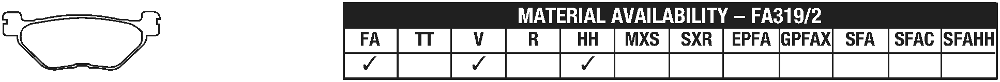

Specifications
General Specifications
Service Data
Specifications describe the closest matching model year. Confirm variant-specific equipment and service limits against the owner's manual.

FA319/2100 × 38.5 × 9.5 mmEBC shape badges show the actual pad diagram, code and published dimensions. Diagrams reproduced with written permission from EBC.
Torque Specifications
A verified model-specific torque table is not available for this fitment entry. Use the workshop manual for fastener torque values.
Frequently Asked Questions
How much horsepower (BHP) does the FJR 1300 A make?
The Yamaha FJR 1300 A is rated at 197.3 hp @ 13,500 rpm.
What is the torque of the Yamaha FJR 1300 A?
Manufacturer-claimed peak torque is 113.3 Nm @ 11,500 rpm.
What is the engine displacement of the Yamaha FJR 1300 A?
The Yamaha FJR 1300 A is listed with a 1300 cc engine.
What is the seat height of the Yamaha FJR 1300 A?
The seat height is listed as 855 mm. Seat width and suspension sag also affect reach.
How much does the Yamaha FJR 1300 A weigh?
The kerb weight is listed as 201 kg.
What is the power-to-weight ratio of the Yamaha FJR 1300 A?
Using the listed 197.3 hp and 201 kg, the calculated ratio is about 982 hp per tonne (0.73 kW/kg).
Is the Yamaha FJR 1300 A suitable for beginners?
It falls outside the site's beginner shortlist criteria: 197.3 hp @ 13,500 rpm is above the 50 hp limit; 201 kg is above the 200 kg limit; 855 mm is above the 800 mm seat limit. The criteria are 50 hp or less, 200 kg or less, an 800 mm seat or lower, and a non-sport, non-competition category.
Is the Yamaha FJR 1300 A A2-legal?
On the listed figures it exceeds the European A2 limits: about 147.1 kW and 0.73 kW/kg (limits: 35 kW and 0.2 kW/kg). A restricted version may be available; check local approval.
Is the Yamaha FJR 1300 A suitable for shorter riders?
The seat is listed at 855 mm, which is very tall by the site's seat-height bands (760 mm or lower low, 761–800 mm moderate, 801–830 mm tall, above 830 mm very tall). Seat width, suspension sag and rider inseam also affect reach.
What is the fuel capacity of the Yamaha FJR 1300 A?
Fuel capacity is listed as 17 L.
What tyres does the FJR 1300 A use?
Tyre sizes are listed as 120/70-ZR17 front, 190/55-ZR17 rear.
What suspension does the Yamaha FJR 1300 A use?
Front: KYB telescopic fork, 120 mm (4.7 inches). Rear: Swingarm, 120 mm (4.7 inches).
What brakes does the Yamaha FJR 1300 A use?
Front: Double disc. Hydraulic. Rear: Single disc. Hydraulic..
What is the service interval for the Yamaha FJR 1300 A?
The listed service interval is Every 10,000 km (6,200 miles) or 12 months. Confirm the schedule for your market and model year.
What battery does the FJR 1300 A use?
The listed battery code is YT14B-BS. Confirm terminal layout and case dimensions against the battery fitted to your machine.
What brake pads does the FJR 1300 A use?
Front: SBS 740HS. Rear: EBC FA319/2 · SBS 769LS. These are pad-shape references; confirm the compound and exact model year before ordering.
What spark plug does the FJR 1300 A use?
The listed spark plug is NGK LMAR9E-J. Confirm the gap and heat range for your model year.
What chain does the FJR 1300 A use?
The listed chain or final drive is 525 pitch, 114 links. Confirm the pitch, link count and adjustment procedure for your model year.
What is the engine oil capacity of the Yamaha FJR 1300 A?
Engine oil capacity is 4.9 L. Confirm the exact fill procedure in the owner's or workshop manual.
What fork oil does the Yamaha FJR 1300 A use?
Listed fork oil data: grade 5W — 2013–2014, 2018; air gap 105 mm — 2013–2014, 2018. Confirm the fill procedure in the workshop manual.
What fork seal size does the Yamaha FJR 1300 A use?
The listed fork oil seal is 48.00 × 61.00 × 11.00 mm (OHLINS, NOK) — 2013–2014, 2018.
What rear shock does the Yamaha FJR 1300 A use?
The listed rear shock is Soqi (44/14) Mono Tube (Dividing Piston) — 2013–2014, 2018.
Specifications are manufacturer-claimed and can vary by model year and market. Confirm service limits and torque values against the owner's or workshop manual. Data updated 2026-11-22.